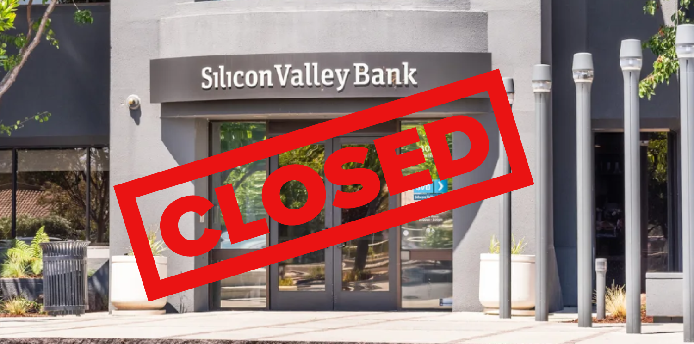
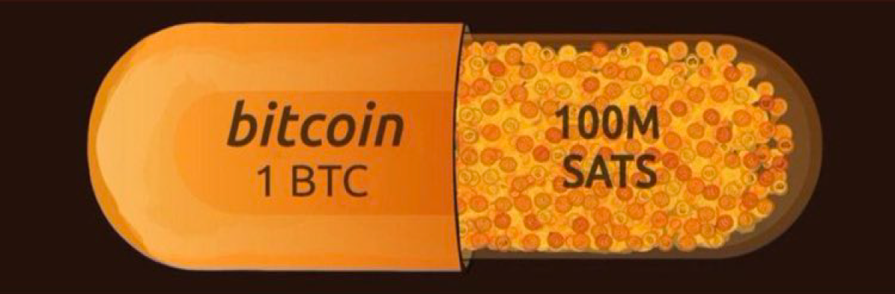

BITCOIN NÃO TEM CORRIDAS AOS BANCOS
MAS O TEU BANCO
PODE TER
O QUE É UMA
CORRIDA AOS BANCOS?
Uma corrida aos bancos ocorre quando demasiadas pessoas tentam levantar o seu dinheiro do banco ao mesmo tempo.
Se os bancos não possuirem dinheiro suficiente para fazer face aos levantamentos, podem entrar em colapso total em caso de uma corrida aos bancos/depósitos.
COMO É QUE ACONTECEM AS CORRIDAS AOS BANCOS?
O nosso sistema bancário é de "reserva fracionária", o que significa que os bancos não guardam o teu dinheiro num cofre e esperam que o gaste ou que o retire.
Em vez disso, o teu banco pega no teu dinheiro e empresta ou investe-o. Isto pode bloquear o teu dinheiro durante longos períodos de tempo, apesar de o banco te prometer a possibilidade de o levantar a qualquer momento.
Então o que é que acontece se tentares levantar o teu dinheiro depois de o banco já o ter emprestado ou investido?
Não há problema se fores o único a tentar levantar dinheiro. O banco pega no dinheiro de outra pessoa e dá-o a ti. Mas o que é que acontece quando muitas pessoas tentam levantar dinheiro ao mesmo tempo?

Muitas pessoas acabaram de descobrir quando houve uma corrida no Silicon Valley Bank em março de 2023.
O banco tinha investido o dinheiro dos seus clientes em obrigações que estavam bloqueadas até 30 anos. Pior ainda, o valor dessas obrigações caiu recentemente, pelo que o Silicon Valley Bank não podia simplesmente vender as obrigações para obter o dinheiro dos teus depositantes. Não tinham dinheiro suficiente para fazer face aos levantamentos dos teus depositantes.
À medida que mais pessoas descobriam, o problema só piorava. Chegaram mais pedidos de levantamento, mas muitos não foram processados. Milhares de empresas aperceberam-se de que não poderiam pagar aos teus empregados devido à falência do banco.
A FDIC (em Portugal seria o Fundo de Garantia de Depósitos, FGD) interveio e concordou em indemnizar os depositantes. Problema resolvido? Não exatamente...
O SEGURO DO FGD PROTEGE O MEU DINHEIRO?
As garantias do FGD foram concebidas para proteger os depositantes bancários em caso de falência de um banco. Os depósitos são assegurados até €100.000 por depositante. Parece ótimo, certo?
Não exatamente. Se um banco falir, onde é que o FGD vai buscar o dinheiro? Em 2020 possuiam recursos financeiros que ascendiam a 1674 milhões de euros.
Parece muito dinheiro até o compararmos com o montante dos depósitos que asseguram: quase 178 biliões ou 178,2 mil milhões de euros.
Podemos concluir que o FGD só tem dinheiro suficiente nos seus recursos financeiros para cobrir um pouco mais de 0,9% dos depósitos.
EXISTEM BANCOS QUE NÃO UTILIZAM RESERVAS FRACIONÁRIAS?
Alguns bancos tentaram tornar-se "bancos seguros", que não emprestam nem investem os fundos dos depositantes. No entanto, as tuas candidaturas foram recusadas pela Reserva Federal, o que significa que não podem funcionar legalmente como bancos.
Por terem sido impedidos de operar, não há hoje bancos que não utilizem reservas fracionárias.
Felizmente, há uma forma de optar por sair do sistema de reservas fracionárias, sendo o teu próprio banco. Não, não estamos a falar de meter dinheiro debaixo do colchão - isso continua a ser vulnerável à inflação.
Estamos a falar de Bitcoin: um novo sistema financeiro que te permite ser o teu próprio banco.
O QUE É
BITCOIN?
Bitcoin é duas coisas: um dinheiro digital e uma rede de computadores. É possível enviar Bitcoin (o dinheiro digital) diretamente a outras pessoas utilizando a rede Bitcoin (a rede informática).
Bitcoin é uma forma radicalmente nova de armazenar e transacionar valor. Ao contrário das redes financeiras normais, a rede Bitcoin funciona sem autoridades centrais ou administradores de confiança. Isso faz do Bitcoin o primeiro dinheiro aberto e sem fronteiras.
O Bitcoin é um dinheiro digital que te dá total propriedade sobre a tua riqueza. Pela primeira vez na história da humanidade, todos podem possuir um ativo que é verdadeiramente escasso, não requer permissão para ser usado e não pode ser confiscado quando armazenado corretamente.
O Bitcoin pode ser enviado para qualquer lugar do mundo, de forma rápida e barata. Não há necessidade de intervenção de terceiros, como um banco.
Bitcoin permite que qualquer pessoa armazene a sua riqueza de forma segura sem ter que se preocupar se o governo a está a roubar através da inflação quando imprime mais dinheiro.
Governos de todo o mundo podem imprimir mais papel-moeda, mas ninguém pode imprimir mais Bitcoin.
Podes facilmente autocustodiar o teu Bitcoin para assumires o controlo dele, dando-te acesso total ao poder do Bitcoin. Se podes descarregar uma aplicação, podes auto-custodiar Bitcoin e armazenares a tua riqueza sem teres que depemder de mais ninguém.
Bitcoin é dinheiro superior.
O BITCOIN PODE PROTEGER-ME DE CORRIDAS AOS BANCOS?
Sim, o Bitcoin é um sistema de reserva total. Corridas bancárias são impossíveis no Bitcoin desde que retires o teu Bitcoin para a tua própria carteira e não o deixe numa corretora.
Se podes descarregar uma aplicação, podes auto-custodiar o teu Bitcoin e ser o teu próprio banco!
Não te preocupes mais com inflação ou corridas bancárias - ganha controlo do teu dinheiro.
OUVI DIZER QUE O BITCOIN É SUPER VOLÁTIL. ISSO É SEGURO?
A curto prazo, o valor do Bitcoin tende a flutuar, mas a volatilidade observada no dia a dia "desaparece" a longo prazo.

O Bitcoin continua a tornar-se cada vez menos volátil ao longo do tempo. À medida que mais pessoas usam o Bitcoin como uma conta-poupança a longo prazo, mais o seu valor tende a estabilizar.
Muitas pessoas optam por armazenar valor em Bitcoin durante muitos anos como uma forma segura de minimizar o risco da volatilidade e proteger o seu poder de compra ao longo do tempo.
Em alguns países, como a Venezuela, o Sudão, o Líbano, a Síria, a Argentina, a Turquia e muitos outros, o valor da moeda local inflaciona tão rapidamente que o Bitcoin é vista como a forma mais estável de poupar dinheiro.
NÃO TENHO DINHEIRO PARA COMPRAR UM BITCOIN INTEIRO
Tal como um euro é composto por 100 cêntimos, um bitcoin é compost por 100.000.000 (100 milhões) de sats.

Não é necessário possuir um bitcoin inteiro. A maioria das pessoas possui apenas sats. Sats são fracções de um bitcoin. Por exemplo, se 1 bitcoin inteiro custa €50.000, então €1 compra 2.000 sats!
O BITCOIN JÁ FOI PIRATEADO?
É possível que tenhas ouvido falar de um "Bitcoin hack" nas notícias. A maioria das pessoas lê estes artigos e acredita que a rede Bitcoin foi pirateada, quando não é esse o caso.
O que é a Rede Bitcoin? Bem, pensa na moeda Bitcoin como um comboio. A rede Bitcoin é a linha do comboio.
Quando se lê nas notícias sobre um hack de Bitcoin, está-se a ler sobre uma corretora que foi pirateado. As corretoras são empresas que fazem a custódia do Bitcoin por ti. No entanto, isso vem com um risco: perdes o Bitcoin quando a empresa o administra mal ou entra em falência. Isso acontece com frequência, e é por isso que é uma ideia melhor fazeres a autocustódia do teu Bitcoin.
A beleza da Bitcoin é o facto de poderes fazeres tu a custódia do ativo. Isto significa que podes assumir o controlo total sobre o teu Bitcoin através da tua própria carteira de Bitcoin. Isto pode parecer complicado, mas é tão fácil como descarregar uma aplicação.
A rede Bitcoin nunca foi hackeada e é a rede de computadores mais segura do mundo. Mesmo se combinasses todos os servidores do Facebook, Amazon, Apple, Netflix e Google, a rede Bitcoin seria na mesma a mais poderosa e mais segura.
O BITCOIN NÃO CONSOME MUITA ENERGIA?
Bitcoin utiliza energia para proteger a rede e garantir que O Bitcoin que possuis não te pode ser retirado.
A Bitcoin utiliza uma quantidade significativa de energia, o que é ótimo por muitas razões.
— Bitcoin é a rede de computadores mais segura do mundo.
— Bitcoin ajuda a estabilizar a rede de energia do Texas
com a mineração de bitcoin.
— Bitcoin reduz as emissões da extração de petróleo.
— Bitcoin mesmo assim consome menos energia do que
que os americanos gastam em luzes de
luzes de Natal todos os anos.
Podes ler sobre mais fantásticas formas de como o Bitcoin está a melhorar o mundo no nosso website principal em bitcoin.rocks